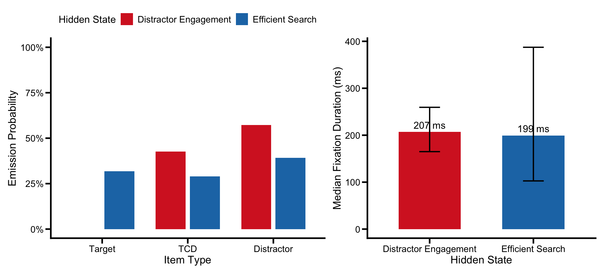
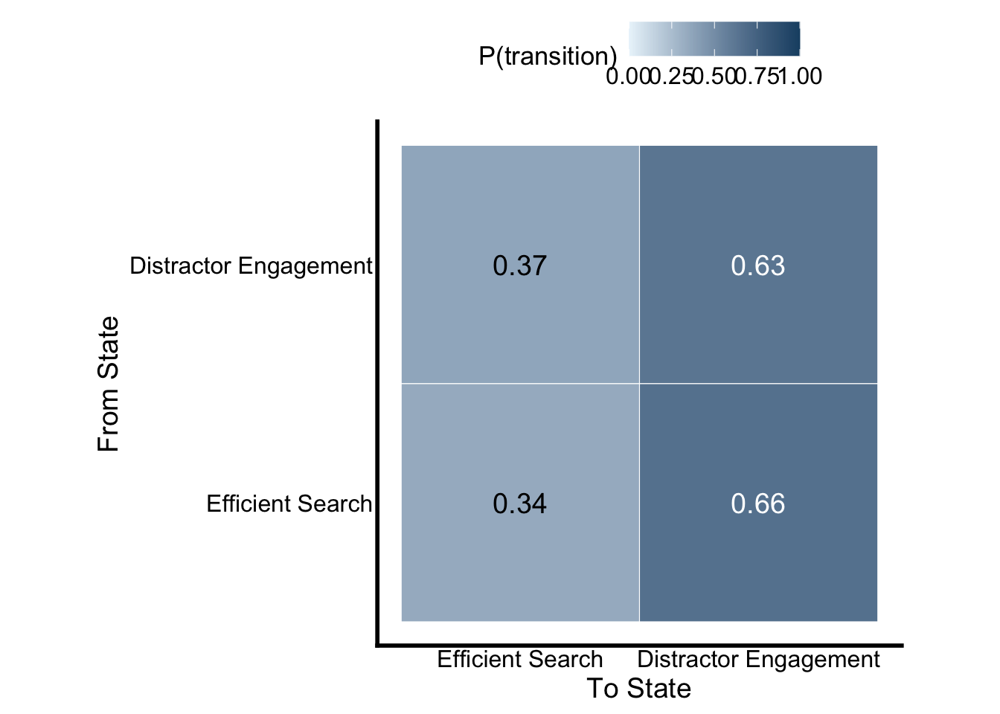
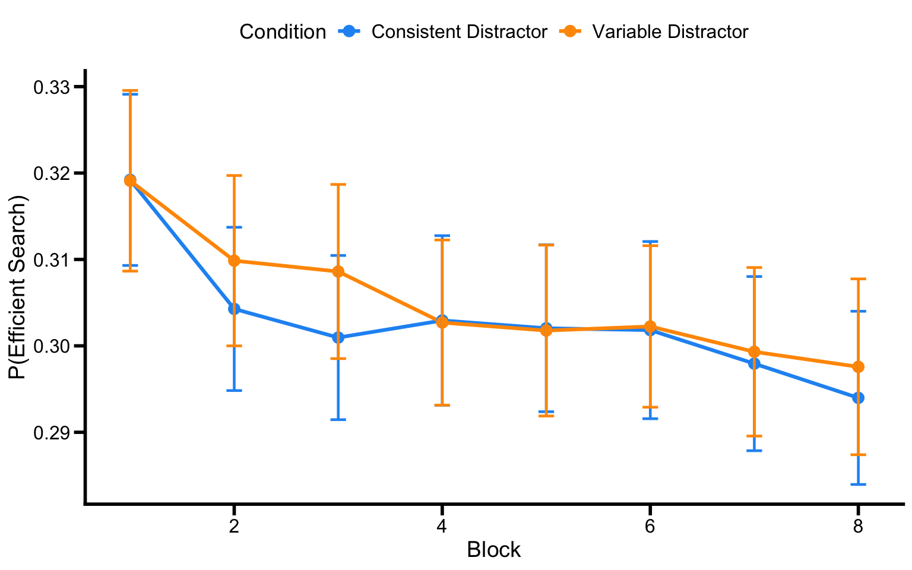
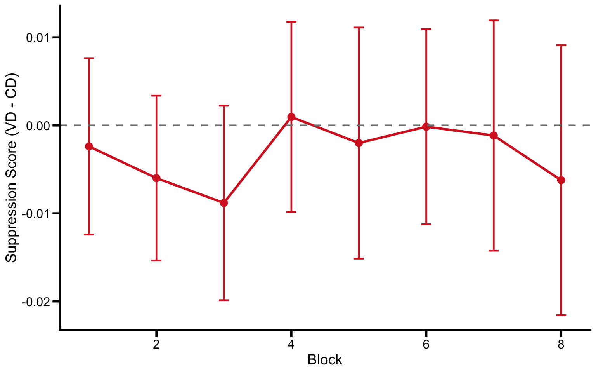
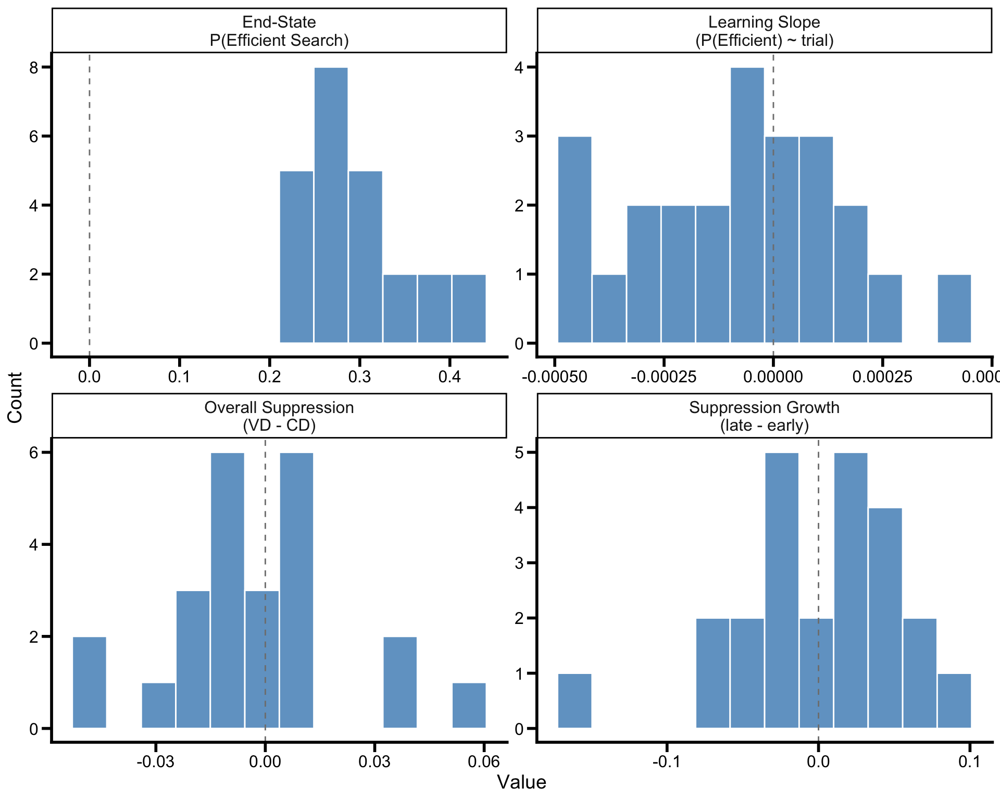
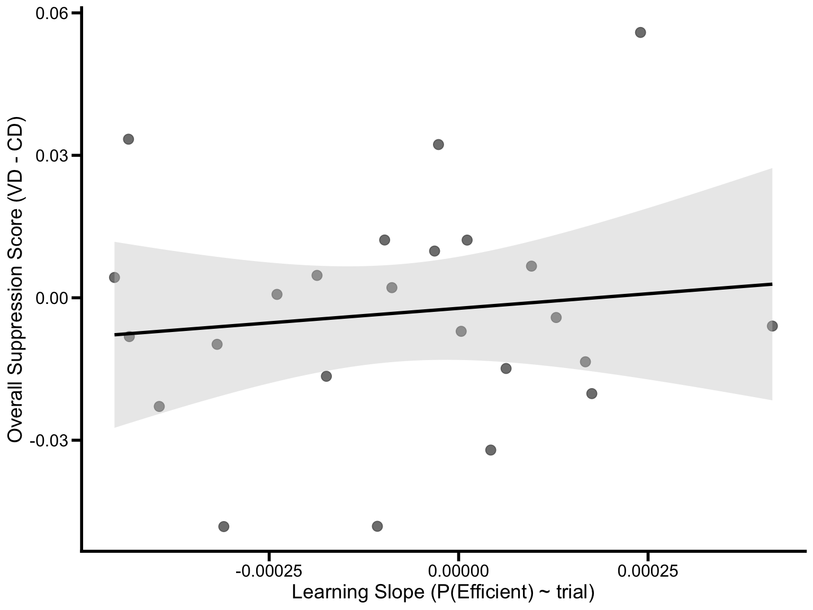
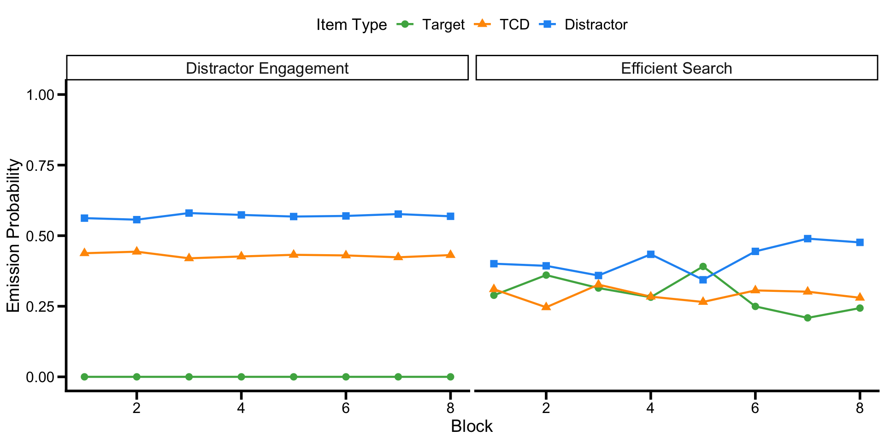
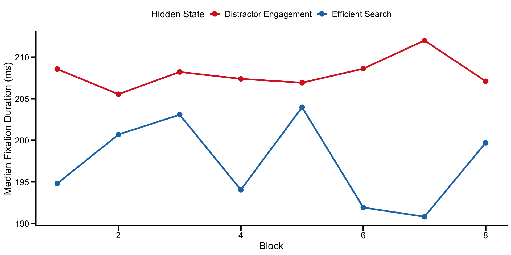
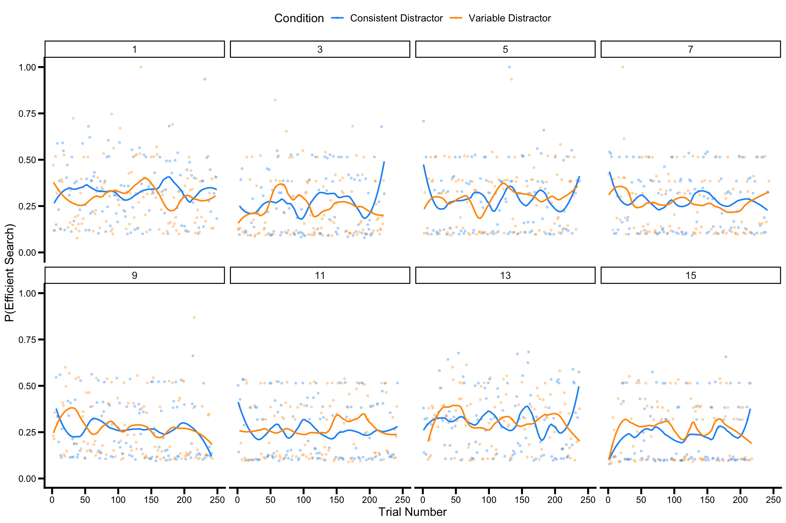

Portfolio 9 established that a 2-state joint HMM (item type + fixation duration) recovers two interpretable attentional modes - Efficient Search and Distractor Engagement, and that the VD-CD difference in state prevalence captures the learned distractor suppression signal at the group level. That proof-of-concept was fitted to all 48 participants pooled across task orders.
Stage 2 retains the pooled model for state estimation-because the hidden states represent stimulus-driven processing modes that should be invariant to whether participants completed the RSVP task first, fitting on all 48 participants yields more stable emission and transition parameter estimates than fitting on 24 alone. The model is fitted and decoded on the full sample, and then the focus narrows to the VST-first group (TaskOrder = 1; odd-numbered subjects, n = 24) for feature extraction. These participants completed the Visual Search Task before the RSVP task, making them the critical sample for testing whether individual differences in VST suppression learning predict cross-task transfer to RSVP (Stage 3). This portfolio extracts a set of participant-level features that quantify how quickly and how completely each individual learned to suppress the consistent distractor. The features are designed to serve as predictors in Stage 3’s transfer regression.
The key features extracted are:
rm(list = ls())
library(tidyverse)
library(readxl)
library(depmixS4)
library(knitr)
library(patchwork)
library(zoo) # for rollmean in transition point calculation
select <- dplyr::select
filter <- dplyr::filter# Plot theme (matching manuscript style from p09)
axis_text_size <- 14
axis_tick_text_size <- 12
graph_color <- "black"
axis_tick_length <- 0.25
axis_tick_units <- "cm"
axis_thickness <- 1
manuscript_theme <- theme_classic() +
theme(
axis.line = element_line(linewidth = axis_thickness, colour = graph_color),
axis.title = element_text(size = axis_text_size),
axis.text = element_text(colour = graph_color, size = axis_tick_text_size),
axis.ticks = element_line(linewidth = axis_thickness, colour = graph_color),
axis.ticks.length.y = unit(axis_tick_length, axis_tick_units),
axis.ticks.length.x = unit(axis_tick_length, axis_tick_units),
legend.position = "top",
legend.text = element_text(size = 12),
legend.title = element_text(size = 13),
text = element_text(size = axis_tick_text_size)
)
# State colors (consistent with p09)
col_efficient <- "#1F77B4"
col_engaged <- "#D62728"
state_colors <- c("Efficient Search" = col_efficient,
"Distractor Engagement" = col_engaged)We load the same preprocessed fixation data as in Portfolio 9, using all 48 participants for model fitting. Trials with fewer than 2 fixations are excluded because a single-fixation sequence provides no transition information for the HMM. The VST-first filter is applied after decoding, at the feature extraction stage.
fdata_file <- "summary/VST_DataSummary_SL_EyeTracking_Final.xlsx"
fdata <- read_excel(fdata_file, sheet = "fdata")hmm_data <- fdata %>%
mutate(
subjnum = as.integer(subjnum),
block = as.integer(block),
block_Norm = as.integer(block_Norm),
trial = as.integer(trial),
saccindex = as.integer(saccindex),
Dwell = as.numeric(CURRENT_FIX_DURATION),
# Fixation durations are right-skewed; log makes the Gaussian emission a sensible fit.
log_dur = log(as.numeric(CURRENT_FIX_DURATION)),
# obs is an integer code kept for export readability; depmixS4's multinomial
# response actually consumes the factor `obs_factor` defined just below.
obs = case_when(
curritem == "Target" ~ 1L,
curritem == "TCD" ~ 2L,
curritem == "Distractor" ~ 3L
),
obs_factor = factor(obs, levels = 1:3,
labels = c("Target", "TCD", "Distractor")),
condition = factor(condition, levels = c("CD", "VD")),
# TaskOrder kept as integer here (1 = VST-first, 2 = RSVP-first) for simple
# == 1, filtering downstream; p09 used a labelled factor for plot facets.
TaskOrder = as.integer(TaskOrder)
) %>%
group_by(subjnum) %>%
mutate(
# `trial_id` uniquely identifies each trial within a participant - used later by `ntimes` to mark independent HMM sequences so the model resets at trial boundaries instead of treating all data as one continuous chain.
trial_id = paste(subjnum, block, trial, sep = "_"),
# `trial_num` is a per-participant 1..N index that makes regression slopes against trial number well-defined within each participant.
trial_num = dense_rank(interaction(block, trial))
) %>%
ungroup() %>%
filter(!is.na(obs), !is.na(log_dur), is.finite(log_dur)) %>%
select(subjnum, TaskOrder, block, block_Norm, trial, trial_num, trial_id,
condition, saccindex, curritem, obs, obs_factor, Dwell, log_dur,
CURRENT_FIX_X, CURRENT_FIX_Y) %>%
arrange(subjnum, trial_num, saccindex)
# Remove trials with fewer than 2 fixations: a single-fixation sequence has zero transitions, so it contributes nothing to the posterior decoding's transition structure (the loaded model already treats trials as independent sequences).
trial_counts <- hmm_data %>% count(trial_id, name = "n_fix")
hmm_data <- hmm_data %>%
semi_join(trial_counts %>% filter(n_fix >= 2), by = "trial_id") %>%
arrange(subjnum, trial_num, saccindex)
# Use rle on the row-ordered trial_id so seq_lengths matches the data row order (count() would sort alphabetically and break alignment with arrange()).
# Even though we are not re-fitting the HMM here, `seq_lengths` makes the trial boundaries explicit and is reused by the per-block re-fits later in the file.
seq_lengths <- rle(as.character(hmm_data$trial_id))$lengthsn_subj <- length(unique(hmm_data$subjnum))
n_subj_vst <- length(unique(hmm_data$subjnum[hmm_data$TaskOrder == 1]))
trials_per_subj <- hmm_data %>%
distinct(subjnum, trial_id) %>%
count(subjnum) %>%
summarise(M = mean(n), SD = sd(n), Min = min(n), Max = max(n))
fix_per_trial <- hmm_data %>%
count(trial_id) %>%
summarise(M = mean(n), SD = sd(n), Min = min(n), Max = max(n))
kable(trials_per_subj, digits = 1,
caption = "Table 1. Trials per participant (full sample, used for model fitting).")| M | SD | Min | Max |
|---|---|---|---|
| 204.9 | 14.2 | 175 | 231 |
kable(fix_per_trial, digits = 2,
caption = "Table 2. Fixations per trial (full sample, after excluding 1-fixation trials).")| M | SD | Min | Max |
|---|---|---|---|
| 3.47 | 0.85 | 2 | 7 |
The full sample includes 48 participants (24 VST-first) contributing an average of 205 trials each, with 3.47 fixations per trial on average. The model is fitted on all participants; feature extraction below is restricted to the VST-first group.
Rather than re-fitting the HMM from scratch (which can land on a different local optimum due to EM sensitivity), we load the fitted model object saved by Portfolio 9. This guarantees that the emission parameters, transition matrix, and state labels are identical across portfolios. The model was fitted in p09 on all 48 participants with 10 random restarts; see Portfolio 9 for full fitting details.
# Load the fitted 2-state joint HMM from p09
fit_vst_first <- readRDS("output/stage1_fitted_model.rds")# Container for the per-state emission parameters; we'll back-transform the
# Gaussian's location parameter to the duration's median in ms (see note below).
emission_df <- data.frame(
state = 1:2,
p_target = NA, p_tcd = NA, p_distractor = NA,
median_dur_ms = NA, sd_log_dur = NA
)
# `@response[[s]][[1]]` is the multinomial (item-type) emission for state s;
# `@response[[s]][[2]]` is the Gaussian (log-duration) emission
# family = multinomial("identity") - the multinomial coefficients are emission probabilities directly (no link function to invert).
for (s in 1:2) {
rp_cat <- fit_vst_first@response[[s]][[1]]@parameters$coefficients
rp_gauss <- fit_vst_first@response[[s]][[2]]@parameters
emission_df$p_target[s] <- rp_cat[1]
emission_df$p_tcd[s] <- rp_cat[2]
emission_df$p_distractor[s] <- rp_cat[3]
# exp(mu_log) is the median (not arithmetic mean) of the log-normal duration distribution; the arithmetic mean would be exp(mu + sigma^2/2). Reporting the median keeps the central-tendency value consistent with the asymmetric +/- 1 SD bounds plotted in Figure 1.
emission_df$median_dur_ms[s] <- exp(rp_gauss$coefficients)
emission_df$sd_log_dur[s] <- rp_gauss$sd # SD on log scale
}
# Label states by content rather than depmixS4's arbitrary state index.
# State indices (1, 2) can flip between fits / restarts (the "label-switching" problem), so we identify Efficient Search as whichever state has higher P(Target). Doing this once here means downstream code references states by meaning, not by raw index.
efficient_state <- which.max(emission_df$p_target)
engaged_state <- setdiff(1:2, efficient_state)
emission_df$state_label <- ifelse(
emission_df$state == efficient_state,
"Efficient Search", "Distractor Engagement"
)
# Transition matrix: `@transition[[i]]` holds the from-state-i row of the transition model.
# Under the baseline (no-covariate) spec used in p09, `@parameters$coefficients` is just a length-K vector of probabilities --> the row of the K x K transition matrix.
trans_mat <- matrix(NA, 2, 2)
for (i in 1:2) {
trans_mat[i, ] <- fit_vst_first@transition[[i]]@parameters$coefficients
}
colnames(trans_mat) <- rownames(trans_mat) <- emission_df$state_label
# Initial state probabilities - what state a trial is most likely to begin in.
# depmixS4 stores parameters in a fixed order: the K initial-state probabilities first, then transition parameters, then emission parameters.
# With K = 2, indices 1:2 are P(start in state 1) and P(start in state 2).
init_pars <- getpars(fit_vst_first)
init_probs <- init_pars[1:2]em_display <- emission_df %>%
select(State = state_label,
`P(Target)` = p_target,
`P(TCD)` = p_tcd,
`P(Distractor)` = p_distractor,
`Median Duration (ms)` = median_dur_ms,
`SD log(dur)` = sd_log_dur)
kable(em_display, digits = 3,
caption = "Table 3. Emission parameters for each hidden state (full sample).")| State | P(Target) | P(TCD) | P(Distractor) | Median Duration (ms) | SD log(dur) |
|---|---|---|---|---|---|
| Efficient Search | 0.319 | 0.290 | 0.391 | 199.371 | 0.664 |
| Distractor Engagement | 0.000 | 0.427 | 0.573 | 206.888 | 0.226 |
p_item <- emission_df %>%
pivot_longer(cols = c(p_target, p_tcd, p_distractor),
names_to = "item", values_to = "probability") %>%
mutate(
item = recode(item,
"p_target" = "Target", "p_tcd" = "TCD", "p_distractor" = "Distractor"),
item = factor(item, levels = c("Target", "TCD", "Distractor"))
) %>%
ggplot(aes(x = item, y = probability, fill = state_label)) +
geom_col(position = position_dodge(0.8), width = 0.7) +
scale_fill_manual(values = state_colors) +
scale_y_continuous(labels = scales::percent_format(), limits = c(0, 1)) +
labs(x = "Item Type", y = "Emission Probability", fill = "Hidden State") +
manuscript_theme
p_dur <- emission_df %>%
mutate(
dur_lo = exp(log(median_dur_ms) - sd_log_dur),
dur_hi = exp(log(median_dur_ms) + sd_log_dur)
) %>%
ggplot(aes(x = state_label, y = median_dur_ms, fill = state_label)) +
geom_col(width = 0.6) +
geom_errorbar(aes(ymin = dur_lo, ymax = dur_hi), width = 0.2, linewidth = 0.8) +
geom_text(aes(label = sprintf("%.0f ms", median_dur_ms)),
vjust = -0.5, size = 4.5) +
scale_fill_manual(values = state_colors) +
labs(x = "Hidden State", y = "Median Fixation Duration (ms)", fill = "Hidden State") +
manuscript_theme +
theme(legend.position = "none")
p_item + p_dur + plot_layout(widths = c(1.2, 1))
Figure 1. Emission profiles of the 2-state joint HMM (full sample). Left: item-type emission probabilities. Right: median fixation duration by state (back-transformed from the Gaussian on log duration), with the 16th-84th percentile bounds (i.e. exp(μ ± σ) on the log scale).
The 2-state joint model fitted to the full sample recovered the same two attentional modes as in Portfolio 9. The Efficient Search state was characterized by elevated P(Target) = 0.319 and shorter fixation duration (Mdn = 199 ms). The Distractor Engagement state showed higher P(TCD) = 0.427 and P(Distractor) = 0.573, with longer fixation duration (Mdn = 207 ms).
kable(round(trans_mat, 3),
caption = "Table 4. Transition matrix between hidden states (full sample).")| Efficient Search | Distractor Engagement | |
|---|---|---|
| Efficient Search | 0.342 | 0.658 |
| Distractor Engagement | 0.369 | 0.631 |
trans_long <- as.data.frame(trans_mat) %>%
mutate(from = rownames(trans_mat)) %>%
pivot_longer(-from, names_to = "to", values_to = "prob") %>%
mutate(
from = factor(from, levels = emission_df$state_label),
to = factor(to, levels = emission_df$state_label)
)
ggplot(trans_long, aes(x = to, y = from, fill = prob)) +
geom_tile(color = "white") +
geom_text(aes(label = sprintf("%.2f", prob)),
color = ifelse(trans_long$prob > 0.5, "white", "black"), size = 5) +
scale_fill_gradient(low = "#EBF5FB", high = "#1B4F72", limits = c(0, 1)) +
labs(x = "To State", y = "From State", fill = "P(transition)") +
coord_equal() +
manuscript_theme +
theme(axis.ticks = element_blank())
Figure 2. Transition probability matrix. Diagonal entries are self-persistence; off-diagonal entries are switches. Distractor Engagement is more self-persistent than Efficient Search, consistent with the asymmetric attractor structure characterized in Portfolio 9.
The initial state probabilities were P(Efficient Search) = 0.110 and P(Distractor Engagement) = 0.890.
We extract the smoothed marginal posterior P(state | full fixation
sequence for that trial) for every fixation in all 48 participants, then
average those per-fixation posteriors within each trial to obtain
trial-level P(Efficient Search) and P(Distractor Engagement). The
Viterbi-decoded most-likely path is also stored as decoded
for completeness, but it is not used in feature extraction-all
downstream analyses operate on the soft (continuous) posterior
probabilities. After decoding, we filter to the VST-first group
(TaskOrder = 1) for all subsequent analyses and feature extraction.
# `posterior(fit)` returns one row per fixation in the data frame the model was fit to.
# Columns:
## `state`: Viterbi-decoded most likely state for that fixation (joint over the whole trial — not the per-fixation argmax)
## `S1`, `S2`: smoothed marginal posteriors P(state = k | full trial), from the forward-backward algorithm. These are what we use.
post <- depmixS4::posterior(fit_vst_first)## Warning in .local(object, ...): Argument 'type' not specified and will default
## to 'viterbi'. This default may change in future releases of depmixS4. Please
## see ?posterior for alternative options.# Index by content not by raw index: `efficient_state` and `engaged_state` were resolved above against P(Target). Using paste0("S", efficient_state) here means the assignment is robust to label-switching across re-fits or model versions.
hmm_data$p_efficient <- post[, paste0("S", efficient_state)]
hmm_data$p_engaged <- post[, paste0("S", engaged_state)]
hmm_data$decoded <- ifelse(post$state == efficient_state,
"Efficient Search", "Distractor Engagement")
# Trial-level state occupancy: average the per-fixation smoothed posteriors within each trial. # The result `p_efficient` per trial is the expected fraction of fixations spent in Efficient Search under the model's posterior --> a soft generalization of "what fraction of this trial was efficient search?".
trial_states_all <- hmm_data %>%
group_by(subjnum, TaskOrder, block_Norm, trial, trial_num, trial_id, condition) %>%
summarise(
p_efficient = mean(p_efficient),
p_engaged = mean(p_engaged),
n_fix = n(),
.groups = "drop"
)
# Filter to VST-first group for all subsequent participant-level work.
# The model fit on all 48 participants; VST-first is the relevant subsample for Stage 3 transfer prediction because they did the VST before the RSVP.)
trial_states <- trial_states_all %>%
filter(TaskOrder == 1)The within-trial HMM (Level 1) gives us P(Efficient Search) for each trial. Level 2 examines how this probability evolves across blocks and conditions as participants learn to suppress the consistent distractor.
# Block × condition averages of the trial-level posteriors. SE is across
# trials within each cell (not across participants); used only for plotting.
block_states <- trial_states %>%
group_by(condition, block_Norm) %>%
summarise(
M_efficient = mean(p_efficient),
SE_efficient = sd(p_efficient) / sqrt(n()),
M_engaged = mean(p_engaged),
SE_engaged = sd(p_engaged) / sqrt(n()),
.groups = "drop"
)ggplot(block_states,
aes(x = block_Norm, y = M_efficient, color = condition,
ymin = M_efficient - SE_efficient,
ymax = M_efficient + SE_efficient)) +
geom_line(linewidth = 1.1) +
geom_point(size = 3) +
geom_errorbar(width = 0.15, linewidth = 0.8) +
scale_color_manual(
values = c("CD" = "#2196F3", "VD" = "#FF9800"),
labels = c("CD" = "Consistent Distractor", "VD" = "Variable Distractor")) +
labs(x = "Block", y = "P(Efficient Search)", color = "Condition") +
manuscript_theme
Figure 3. P(Efficient Search) across blocks by condition (VST-first group only). If suppression is learned, CD should show higher P(Efficient Search) than VD, especially in later blocks.
The HMM suppression score is computed as VD - CD in P(Distractor Engagement). Positive values indicate that participants spend more time in the engaged state on VD trials than CD trials-the expected direction if suppression is learned for the consistent distractor.
# Per-participant × block suppression score: VD - CD in P(Distractor Engagement).
# Pivot wide so each row has one CD and one VD value to subtract; the resulting `suppress_score` is the HMM analog of the standard behavioural VD - CD score.
hmm_suppress <- trial_states %>%
group_by(subjnum, block_Norm, condition) %>%
summarise(M_engaged = mean(p_engaged), .groups = "drop") %>%
pivot_wider(names_from = condition, values_from = M_engaged) %>%
mutate(suppress_score = VD - CD)
# Group-level (across-participant) average suppression score per block, with between-participant SE for the trajectory plot.
block_suppress <- hmm_suppress %>%
group_by(block_Norm) %>%
summarise(
M_score = mean(suppress_score, na.rm = TRUE),
SE_score = sd(suppress_score, na.rm = TRUE) / sqrt(sum(!is.na(suppress_score))),
.groups = "drop"
)ggplot(block_suppress,
aes(x = block_Norm, y = M_score,
ymin = M_score - SE_score, ymax = M_score + SE_score)) +
geom_line(linewidth = 1.1, color = col_engaged) +
geom_point(size = 3, color = col_engaged) +
geom_errorbar(width = 0.15, linewidth = 0.8, color = col_engaged) +
geom_hline(yintercept = 0, linetype = "dashed", color = "gray50", linewidth = 0.8) +
labs(x = "Block", y = "Suppression Score (VD - CD)") +
manuscript_theme
Figure 4. HMM suppression score (VD - CD in P(Distractor Engagement)) across blocks. Values above the dashed line indicate suppression of the consistent distractor.
To test whether the suppression score grows across the experiment, we compare the mean suppression score in the first two blocks (early: blocks 1-2) against the last two blocks (late: blocks 7-8) using a paired t-test.
# Early = blocks 1-2, Late = blocks 7-8; blocks 3-6 are deliberately excluded to keep the contrast cleanly between the start and the end of training.
# Within each participant, average the suppression score within each half, then compute a within-participant late - early difference and one-sample t-test against zero (equivalent to a paired t-test on early vs. late).
suppress_by_half <- hmm_suppress %>%
mutate(half = ifelse(block_Norm <= 2, "early",
ifelse(block_Norm >= 7, "late", NA))) %>%
filter(!is.na(half)) %>%
group_by(subjnum, half) %>%
summarise(M = mean(suppress_score, na.rm = TRUE), .groups = "drop") %>%
pivot_wider(names_from = half, values_from = M) %>%
mutate(diff = late - early)
t_result <- t.test(suppress_by_half$diff)The mean suppression score went from M= -0.004 in blocks 1-2 to M = -0.004 in blocks 7-8. A paired t-test on the within-participant difference yielded t(23) = 0.04, p = 0.9654. This suggests that the growth in HMM-derived suppression across blocks did not reach significance in this subsample, possibly due to reduced power with 24 participants.
For each participant, we extract the following features from the decoded trial-level data. These features quantify individual differences in how quickly and how completely each participant developed suppression, and will serve as predictors in Stage 3’s transfer regression.
# Overall features (pooled across conditions)
participant_features <- trial_states %>%
group_by(subjnum) %>%
arrange(trial_num) %>%
summarise(
# Overall P(Efficient Search)
mean_p_efficient = mean(p_efficient),
# Learning slope: slope of P(Efficient) across trials
learning_slope = coef(lm(p_efficient ~ trial_num))[2],
# Transition trial: first trial where 5-trial rolling mean exceeds 0.50
transition_trial = {
rm <- rollmean(p_efficient, k = 5, fill = NA, align = "center")
idx <- which(rm > 0.5)
if (length(idx) > 0) trial_num[idx[1]] else NA_integer_
},
# End-state: P(Efficient) in last block
end_p_efficient = mean(p_efficient[block_Norm == max(block_Norm)]),
# Early vs late P(Efficient)
early_p_efficient = mean(p_efficient[block_Norm <= 2]),
late_p_efficient = mean(p_efficient[block_Norm >= 7]),
.groups = "drop"
)
# CD- and VD-specific features. The Stage 3 transfer regression uses the pooled features above (learning_slope, transition_trial, end_p_efficient, overall_suppress, suppress_growth); these condition-specific versions are saved alongside as exploratory extras so condition-level patterns can be inspected without re-fitting.
cd_features <- trial_states %>%
filter(condition == "CD") %>%
group_by(subjnum) %>%
summarise(
cd_mean_efficient = mean(p_efficient),
cd_learning_slope = coef(lm(p_efficient ~ trial_num))[2],
cd_end_efficient = mean(p_efficient[block_Norm == max(block_Norm)]),
.groups = "drop"
)
vd_features <- trial_states %>%
filter(condition == "VD") %>%
group_by(subjnum) %>%
summarise(
vd_mean_efficient = mean(p_efficient),
vd_learning_slope = coef(lm(p_efficient ~ trial_num))[2],
vd_end_efficient = mean(p_efficient[block_Norm == max(block_Norm)]),
.groups = "drop"
)
# Per-participant suppression scores
subj_suppress <- hmm_suppress %>%
group_by(subjnum) %>%
summarise(
overall_suppress = mean(suppress_score, na.rm = TRUE),
early_suppress = mean(suppress_score[block_Norm <= 2], na.rm = TRUE),
late_suppress = mean(suppress_score[block_Norm >= 7], na.rm = TRUE),
suppress_growth = late_suppress - early_suppress,
.groups = "drop"
)
# Combine all features
participant_features <- participant_features %>%
left_join(cd_features, by = "subjnum") %>%
left_join(vd_features, by = "subjnum") %>%
left_join(subj_suppress, by = "subjnum")# Compute M and SD for each feature, producing one column per feature × stat (e.g. `learning_slope_M`, `learning_slope_SD`).
# The two pivots then reshape this wide one-row tibble into a tidy feature × {M, SD} table:
## pivot_longer's `names_pattern = "(.+)_(M|SD)"` splits each column name into a feature stem and a statistic suffix
## pivot_wider then puts M and SD in their own columns alongside `feature`
feat_summary <- participant_features %>%
summarise(
across(c(mean_p_efficient, learning_slope, transition_trial,
end_p_efficient, cd_learning_slope, vd_learning_slope,
overall_suppress, suppress_growth),
list(M = ~mean(., na.rm = TRUE),
SD = ~sd(., na.rm = TRUE)),
.names = "{.col}_{.fn}")
) %>%
pivot_longer(everything(),
names_to = c("feature", "stat"),
names_pattern = "(.+)_(M|SD)") %>%
pivot_wider(names_from = stat, values_from = value)
kable(feat_summary, digits = 4,
caption = "Table 5. Descriptive statistics for participant-level HMM features (VST-first group).")| feature | M | SD |
|---|---|---|
| mean_p_efficient | 0.3047 | 0.0403 |
| learning_slope | -0.0001 | 0.0002 |
| transition_trial | 122.8824 | 82.9065 |
| end_p_efficient | 0.2967 | 0.0555 |
| cd_learning_slope | -0.0001 | 0.0002 |
| vd_learning_slope | -0.0001 | 0.0003 |
| overall_suppress | -0.0032 | 0.0238 |
| suppress_growth | 0.0005 | 0.0555 |
feat_long <- participant_features %>%
select(subjnum, learning_slope, overall_suppress,
suppress_growth, end_p_efficient) %>%
pivot_longer(-subjnum, names_to = "feature", values_to = "value") %>%
mutate(feature = recode(feature,
"learning_slope" = "Learning Slope\n(P(Efficient) ~ trial)",
"overall_suppress" = "Overall Suppression\n(VD - CD)",
"suppress_growth" = "Suppression Growth\n(late - early)",
"end_p_efficient" = "End-State\nP(Efficient Search)"
))
ggplot(feat_long, aes(x = value)) +
geom_histogram(fill = col_efficient, alpha = 0.7, bins = 12,
color = "white") +
geom_vline(xintercept = 0, linetype = "dashed", color = "grey50") +
facet_wrap(~ feature, scales = "free", ncol = 2) +
labs(x = "Value", y = "Count") +
manuscript_theme +
theme(strip.text = element_text(size = 12))
Figure 5. Distributions of participant-level HMM features. Each histogram shows between-participant variability in a key suppression learning metric. The dashed line marks zero.
ggplot(participant_features,
aes(x = learning_slope, y = overall_suppress)) +
geom_point(size = 3, color = "gray35", alpha = 0.8) +
geom_smooth(method = "lm", se = TRUE,
color = "black", fill = "gray80", linewidth = 1.1) +
labs(x = "Learning Slope (P(Efficient) ~ trial)",
y = "Overall Suppression Score (VD - CD)") +
manuscript_theme## `geom_smooth()` using formula = 'y ~ x'
Figure 6. Relationship between learning slope and overall suppression score. Each point represents one participant. Participants who shifted more rapidly toward Efficient Search (steeper learning slope) tended to show stronger VD-CD suppression.
cor_ls <- cor.test(participant_features$learning_slope,
participant_features$overall_suppress)A Pearson correlation between learning slope and overall suppression score yielded r = 0.120, t(22) = 0.57, p = 0.5757. This correlation did not reach significance, suggesting that the overall rate of state change and the condition-specific suppression signal may reflect partially independent processes.
To examine whether the HMM emission profiles themselves change with learning-as opposed to just the prevalence of fixed states-we fit separate 2-state joint HMMs for each experimental block, using the VST-first group’s data. If learning involves a qualitative shift in processing (not just a redistribution across stable modes), the emission parameters should evolve across blocks.
Two caveats apply here. First, each block’s HMM is fit independently, so the state indices (1, 2) returned by depmixS4 are arbitrary per block - we re-label states block-by-block as “Efficient Search” (whichever state has higher P(Target)) and “Distractor Engagement” to enable cross-block comparison, but this re-labeling can be unstable in blocks where state separation is weak (e.g., very early blocks before learning has begun). Second, the per-block fit relies on much less data than the full-sample model, so block-level estimates are noisier and should be read as descriptive trends rather than precise parameter trajectories.
hmm_data_vst <- hmm_data %>% filter(TaskOrder == 1)
block_params <- data.frame()
for (b in sort(unique(hmm_data_vst$block_Norm))) {
d_block <- hmm_data_vst %>%
filter(block_Norm == b) %>%
arrange(subjnum, trial_num, saccindex)
sl_block <- rle(as.character(d_block$trial_id))$lengths
# Skip any block with fewer than 20 trial sequences.
# A 2-state joint HMM has ~10 free parameters (initial probs, transitions, two multinomial emissions, two Gaussian means and SDs);
# A 20-trial floor is a conservative minimum for the EM algorithm to converge to a stable solution.
# With ~80 trials per block × 24 VST-first participants this floor is never tripped in the current dataset, but the guard makes the code robust to subsetting.
if (length(sl_block) < 20) next
best_block <- NULL
best_block_ll <- -Inf
for (r in 1:5) {
set.seed(r * 7 + 13)
tryCatch({
mod_b <- depmix(
list(obs_factor ~ 1, log_dur ~ 1),
data = d_block,
nstates = 2,
family = list(multinomial("identity"), gaussian()),
ntimes = sl_block
)
fit_b <- fit(mod_b, verbose = FALSE)
ll_b <- as.numeric(logLik(fit_b))
if (ll_b > best_block_ll) {
best_block_ll <- ll_b
best_block <- fit_b
}
}, error = function(e) {})
}
if (is.null(best_block)) next
# Re-label states by content rather than by depmixS4's arbitrary state index, since per-block fits are independent and the index for the target-bearing state can flip from block to block (the "label-switching" problem).
# The Efficient Search state is identified as whichever has higher P(Target); this assignment can be unstable in blocks where state separation is weak.
for (s in 1:2) {
rp_cat <- best_block@response[[s]][[1]]@parameters$coefficients
rp_gauss <- best_block@response[[s]][[2]]@parameters
eff_s <- which.max(sapply(1:2, function(x)
best_block@response[[x]][[1]]@parameters$coefficients[1]))
slabel <- ifelse(s == eff_s, "Efficient Search", "Distractor Engagement")
block_params <- bind_rows(block_params, data.frame(
block_Norm = b, state = s, state_label = slabel,
p_target = rp_cat[1], p_tcd = rp_cat[2], p_distractor = rp_cat[3],
median_dur_ms = exp(rp_gauss$coefficients),
sd_log_dur = rp_gauss$sd,
n_trials = length(sl_block), ll = best_block_ll
))
}
}## converged at iteration 136 with logLik: -2832.264
## converged at iteration 134 with logLik: -2832.264
## converged at iteration 139 with logLik: -2832.264
## converged at iteration 138 with logLik: -2832.264
## converged at iteration 136 with logLik: -2832.264
## converged at iteration 73 with logLik: -2736.352
## converged at iteration 75 with logLik: -2736.352
## converged at iteration 74 with logLik: -2736.352
## converged at iteration 76 with logLik: -2736.352
## converged at iteration 73 with logLik: -2736.352
## converged at iteration 87 with logLik: -2777.553
## converged at iteration 81 with logLik: -2777.553
## converged at iteration 82 with logLik: -2777.553
## converged at iteration 82 with logLik: -2777.553
## converged at iteration 81 with logLik: -2777.553
## converged at iteration 161 with logLik: -2840.212
## converged at iteration 157 with logLik: -2840.212
## converged at iteration 159 with logLik: -2840.212
## converged at iteration 160 with logLik: -2840.212
## converged at iteration 157 with logLik: -2840.212
## converged at iteration 89 with logLik: -2700.757
## converged at iteration 86 with logLik: -2700.757
## converged at iteration 88 with logLik: -2700.757
## converged at iteration 88 with logLik: -2700.757
## converged at iteration 89 with logLik: -2700.757
## converged at iteration 78 with logLik: -2822.762
## converged at iteration 68 with logLik: -2822.762
## converged at iteration 72 with logLik: -2822.762
## converged at iteration 72 with logLik: -2822.762
## converged at iteration 77 with logLik: -2822.762
## converged at iteration 139 with logLik: -2718.872
## converged at iteration 138 with logLik: -2718.872
## converged at iteration 136 with logLik: -2718.872
## converged at iteration 140 with logLik: -2718.872
## converged at iteration 138 with logLik: -2718.872
## converged at iteration 184 with logLik: -2722.619
## converged at iteration 186 with logLik: -2722.619
## converged at iteration 162 with logLik: -2722.619
## converged at iteration 179 with logLik: -2722.619
## converged at iteration 176 with logLik: -2722.619if (nrow(block_params) > 0) {
bp_long <- block_params %>%
select(block_Norm, state_label, p_target, p_tcd, p_distractor) %>%
pivot_longer(c(p_target, p_tcd, p_distractor),
names_to = "item", values_to = "prob") %>%
mutate(
item = recode(item,
"p_target" = "Target", "p_tcd" = "TCD", "p_distractor" = "Distractor"),
item = factor(item, levels = c("Target", "TCD", "Distractor"))
)
ggplot(bp_long,
aes(x = block_Norm, y = prob, color = item, shape = item)) +
geom_line(linewidth = 0.8) +
geom_point(size = 2.5) +
facet_wrap(~ state_label) +
scale_color_manual(values = c("Target" = "#4CAF50", "TCD" = "#FF9800",
"Distractor" = "#2196F3")) +
ylim(0, 1) +
labs(x = "Block", y = "Emission Probability",
color = "Item Type", shape = "Item Type") +
manuscript_theme +
theme(strip.text = element_text(size = 13))
}
Figure 7. Evolution of item-type emission probabilities across blocks (separate HMM per block). Stable emission profiles would indicate that the states remain qualitatively constant and that learning is captured purely by state prevalence changes.
if (nrow(block_params) > 0) {
ggplot(block_params,
aes(x = block_Norm, y = median_dur_ms, color = state_label)) +
geom_line(linewidth = 1.1) +
geom_point(size = 3) +
scale_color_manual(values = state_colors) +
labs(x = "Block", y = "Median Fixation Duration (ms)",
color = "Hidden State") +
manuscript_theme
}
Figure 8. Evolution of median fixation duration by state across blocks (separate HMM per block, back-transformed from Gaussian on log duration). Duration spread is the primary discriminative signal between states; medians are reported here because exp(μ_log) is the median, not the arithmetic mean, of the log-normal duration distribution.
Figures 7 and 8 show that the per-block emission profiles are broadly stable across the experiment: the Efficient Search state continues to be the only state carrying target fixations, while the Distractor Engagement state remains anchored on TCD and Distractor fixations, and the median-duration ordering between states is preserved. This stability is consistent with the assumption underlying the participant-level feature extraction above-namely, that learning is captured primarily by changes in state prevalence (how often each mode is occupied) rather than by qualitative redrawing of the states themselves. Block-to-block jitter in the parameter trajectories reflects the smaller per-block sample and the label-switching caveat noted earlier; the stable cross-block pattern of state content is what matters for the interpretation.
To illustrate the variability in learning patterns, we plot trial-by-trial P(Efficient Search) for a subset of participants, smoothed with a LOESS curve. These individual trajectories highlight the heterogeneity that the participant-level features are designed to capture.
example_subjs <- sort(unique(trial_states$subjnum))[1:min(8, n_distinct(trial_states$subjnum))]
trial_states %>%
filter(subjnum %in% example_subjs) %>%
ggplot(aes(x = trial_num, y = p_efficient, color = condition)) +
geom_point(alpha = 0.3, size = 0.8) +
geom_smooth(method = "loess", se = FALSE, span = 0.3, linewidth = 0.8) +
facet_wrap(~ subjnum, ncol = 4) +
scale_color_manual(
values = c("CD" = "#2196F3", "VD" = "#FF9800"),
labels = c("CD" = "Consistent Distractor", "VD" = "Variable Distractor")) +
ylim(0, 1) +
labs(x = "Trial Number", y = "P(Efficient Search)", color = "Condition") +
manuscript_theme +
theme(
strip.text = element_text(size = 11),
axis.title = element_text(size = 13),
axis.text = element_text(size = 10),
legend.text = element_text(size = 11)
)## `geom_smooth()` using formula = 'y ~ x'
Figure 9. Individual P(Efficient Search) trajectories for 8 example participants. Blue = CD, orange = VD. Lines are LOESS-smoothed. Between-participant variability in learning speed and endpoint motivates the feature extraction approach.
if (!dir.exists("output")) dir.create("output")
# Full sample decoded data (all 48 participants)
write_csv(
hmm_data %>%
select(subjnum, TaskOrder, block_Norm, trial, trial_num, trial_id,
condition, saccindex, curritem, obs, Dwell, log_dur,
p_efficient, p_engaged, decoded),
"output/stage2_fixation_decoded_all.csv"
)
# VST-first group outputs (for Stage 3)
write_csv(trial_states, "output/stage2_trial_states_vst_first.csv")
write_csv(block_states, "output/stage2_block_states_vst_first.csv")
write_csv(hmm_suppress, "output/stage2_suppression_scores_vst_first.csv")
write_csv(participant_features, "output/stage2_participant_features_vst_first.csv")
if (nrow(block_params) > 0) {
write_csv(block_params, "output/stage2_block_parameters_vst_first.csv")
}
write_csv(emission_df, "output/stage2_emission_params.csv")The participant-level features saved in
output/stage2_participant_features_vst_first.csv will serve
as predictors in Stage 3, where we test whether individual differences
in VST suppression learning (learning slope, end-state efficiency,
suppression growth) predict cross-task transfer to the RSVP task. The
full-sample decoded fixation data
(output/stage2_fixation_decoded_all.csv) is also saved in
case future analyses require state information for the RSVP-first
group.